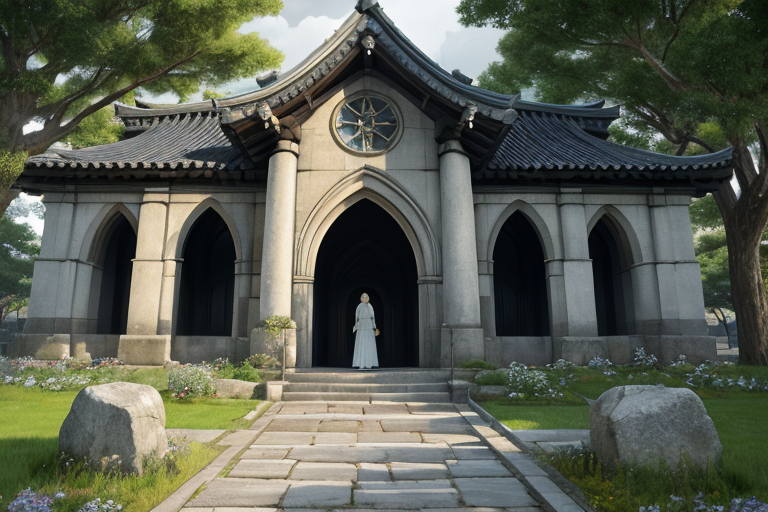
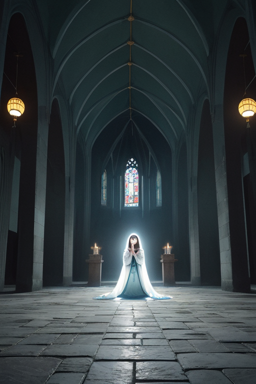
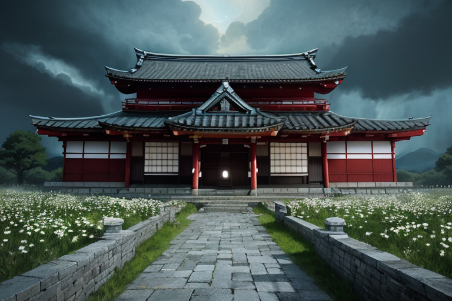
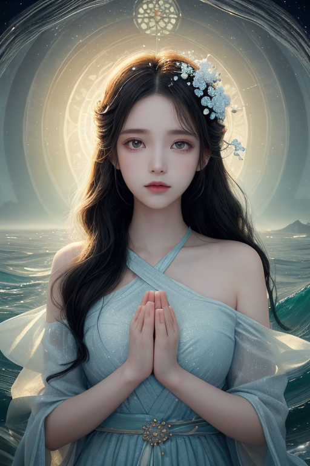
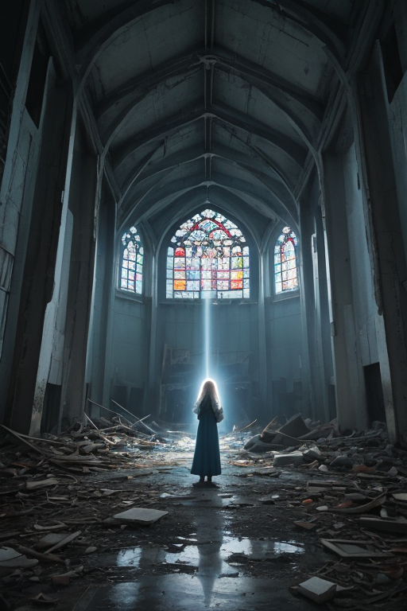

第一章「現れざる祈り」
あなたはまだ気づいていない。この土地にも、王がいることを。
大浦天主堂の尖塔が、午後の穏やかな光を切り裂く。観光客のざわめき、シャッター音、そして静かに祈る人々の息づかい。この場所には、幾重にも層をなす時間が沈殿している。出島の復元された塀の向こうには、かつて世界が交差した痕跡が、今は整然と展示されている。王は、そのすべてを見つめている。ナガサキア・クロニクルは、グラバー園の坂道に佇む一本の楠の木の影に、その姿を溶かしていた。彼の目には、この土地に刻まれた「交差点」の数々が、色褪せることない光の帯として流れ続けている。交易の波、信仰の炎、そして一瞬の閃光。それらは過去のものではない。今もこの土地の地脈を、微かに、しかし確かに震わせ続ける「歪み」なのだ。彼の役目は、その震えが今この瞬間に暴走しないよう、静かに手綱を取ることである。妖精クロナがそっと彼の袖に触れ、交差する波の緩やかな調律が始まる。

第二章 歪みの兆候
グラバー園の石畳を、観光客のざわめきが流れる。その足音の下で、王は微かな軋みを聞く。鎖国と開国、信仰と弾圧、破壊と再生。幾重にも折り重なった歴史の断層が、今も地中で低く唸っている。それは物理的な地震ではない。時代の転換点が生んだ「心象の歪み」だ。
妖精デジマリアが、異国の瓦と和瓦が混在する屋根の上に現れた。「交易の波が、再び高まっています。過去の分断が、今の人の心の隙間を通じて、ぶつかり合おうとしている」。彼女の指先から、目に見えない文化の波紋が広がり、衝突を和らげる。しかし、完全には消せない。出島の跡地からは、かつての「境界」の緊張感が、時折、往来する人々の無意識のすれ違いとなって滲み出る。
王は目を閉じる。祈り深い静寂が彼の内側から広がっていく。問いが心をよぎる。この土地が背負ってきた痛みの数々は、果たして祈りへと昇華されるのか。それとも、新たな分断の種として、地脈に沈殿し続けるのか。彼の手のひらには、青白い光の十字が、ゆっくりと回転を始めた。

第三章 交差の決断
グラバー園の坂道を、異国の薔薇の香りが流れる。王は、煉瓦造りの旧宅の前に立ち、目を閉じていた。彼の内側では、二つの大きな「交差点」が激しく軋んでいた。一つは、鎖国という殻を破った開国の波。もう一つは、全てを焼き尽くした一瞬の閃光。歴史の変革点は、常に膨大な痛みを伴う。彼の役割は、その衝撃を緩和し、人々が耐えうる形に「調整」することだ。
しかし今、地脈にうごめくのは、過去の痛みそのものではない。新たな分断の予感だった。異文化への好奇心と、自らを守りたいという本能。赦しの祈りと、消えない怒りの残響。それらが未消化のまま混ざり合い、歪みとなって蓄積されつつあった。
「……止めるべきか」
クロナがそっと肩に触れる。デジマリアが交差波の乱れを伝える。王は深く息を吸った。彼は変革を止めることはできない。彼にできるのは、その波がもたらす衝突を、少しだけ和らげ、人々の心が折れない「間」を作ることだけだ。青白い光の十字が強く輝く。彼は決断した。痛みそのものを消すのではなく、痛みが、憎しみではなく祈りへと向かうための「微かな傾き」を地脈に刻むのだ。

第四章 妖精との対話
「王よ、この変革は避けられません」デジマリアの声は、交差する波のざわめきのように揺れていた。「異なる波長がぶつかり合う。それは時に破壊を、時に新たな創造を生みます。私たちはその衝突そのものを止めることはできません。できるのは、その衝撃が、すべてを破壊する『断絶』ではなく、新たな何かを生む『契機』となるよう、ほんの少し角度を変えることだけです」
クロナが優しく続けた。「この地は、幾度も痛みを背負ってきました。その傷跡は今も残っています。でも、王よ、見てください。この交差点で、人々は祈りを絶やさなかった。痛みは、確かにここにあります。しかし、その痛みの傍らで、祈りは灯り続けているのです」
王は静かに目を閉じた。彼の内側で、赦しの感情が微かに揺らぐ。彼は感情を持たぬ存在として生まれた。だが、この地の祈りの密度が、彼に「理解」をもたらし始めていた。痛みを消すことはできない。しかし、痛みがただの憎悪や絶望の種とならないよう、祈りの土壌へとほんの少し導くこと――それが、今、この変革の瞬間に、彼に許された唯一の調整だった。

第五章 微調整と余韻
一九四五年八月九日午前十一時二分。祈王ナガサキア・クロニクルは、すべての力を結晶化させた。彼の王国は、原爆投下という歴史の巨大な「歪み」の直撃を受ける。彼にそれを止める力はない。彼にできるのは、爆心地からわずか五百メートル離れた浦上川の畔で、一人の少女が躓いた石を、ほんの一寸だけ転がすことだった。少女は転ばず、川へ落ちず、そのままコンクリートの基礎の陰へ駆け込んだ。彼女の命は、この調整によって保たれた。代償として、祈王の存在の大半が、その瞬間の熱と衝撃に蒸散した。
彼は消えなかった。祈りは消えないからだ。グラバー園の坂道に、大浦天主堂のステンドグラスに、軍艦島の廃墟に、微かな青い光の残滓として、彼は散らばった。彼はもはや「王」としての形を保てない。だが、この地に息づく「赦し」の祈りそのものが、彼の新たな器となった。
痛みは祈りに変わった。変わらざるを得なかった人々の、静かな決意が、この地の土壌を変えた。祈王は、その変容のほんの一端を、ほんの一人の命を繋ぐことで支えた。それだけのことだ。歴史は動き、王国は形を変え、祈りは続く。
あなたの町にも、王がいる。